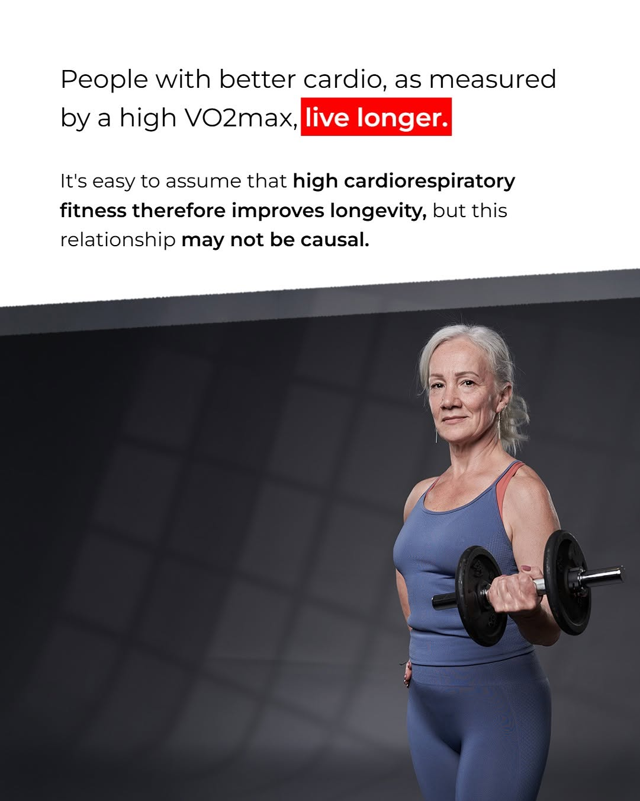
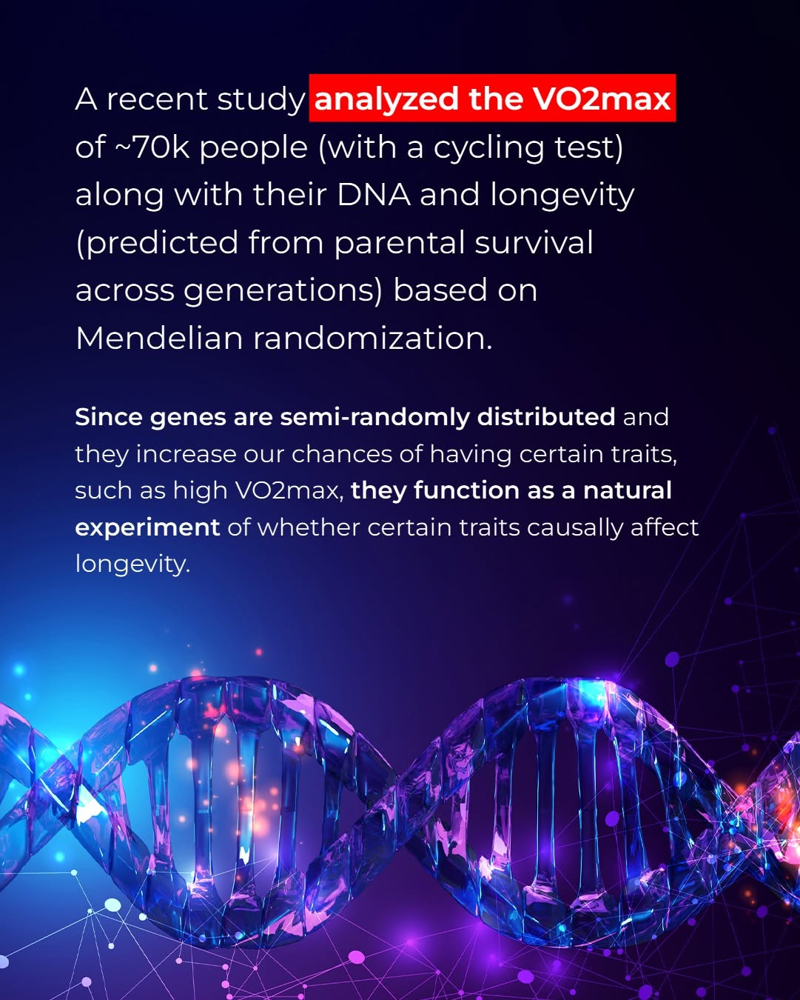
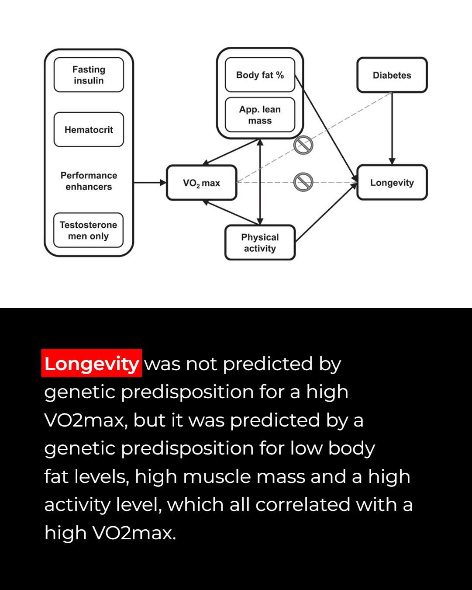
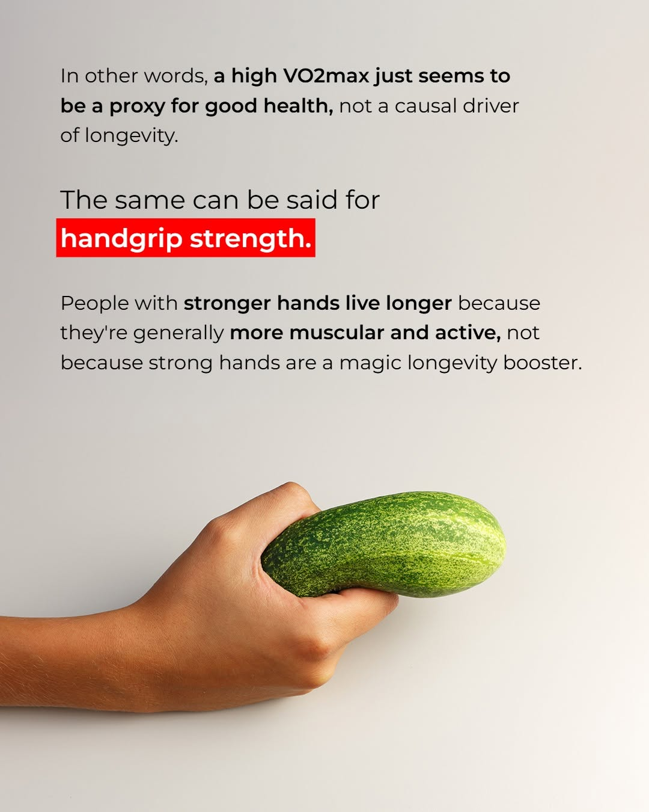

Quoted:
“In other words, a high V02max just seems to be a proxy for good health, not a causal driver of longevity. The same can be said for handgrip strength. People with stronger hands live longer because they're generally more muscular and active, not because strong hands are a magic longevity booster.”
Link to the full study:
Paper · J Clin Endocrinol Metab · 2025Cardiorespiratory Fitness, Body Composition, Diabetes, and Longevity: A 2-Sample Mendelian Randomization Study.Conclusion: Cardiorespiratory fitness can be improved by favorable body composition, physical activity, and performance enhancers. Despite being a strong predictor of mortality, VO2max is not causally associated with T2D or longevity.pmc.ncbi.nlm.nih.gov
Previous posts on this:
- ↪ Mendelian randomization finds no causal effect of VO2-max on longevity or type 2 diabetes
- ↪ Aging causes VO2max to decline, not the reverse
- ↪ Eric Topol: VO2 max is not the same as cardiorespiratory fitness, and claims are overblown
- ↪ VO2max as a causal longevity metric is doubtful; Mendelian randomization shows no effect
- ↪ VO2-max longevity claims rest on weak, over-extrapolated evidence, argues a critique
#vo2maxHD #peterattiaHD
People with better cardio, as measured by a high VO2max, live longer. It's easy to assume that high cardiorespiratory fitness therefore improves longevity, but this relationship may not be causal.
A recent study analyzed the VO2max of ~70k people (with a cycling test) along with their DNA and longevity (predicted from parental survival across generations) based on Mendelian randomization. Since genes are semi-randomly distributed and they increase our chances of having certain traits, such as high VO2max, they function as a natural experiment of whether certain traits causally affect longevity.
Longevity was not predicted by genetic predisposition for a high VO2max, but it was predicted by a genetic predisposition for low body fat levels, high muscle mass and a high activity level, which all correlated with a high VO2max.
In other words, a high VO2max just seems to be a proxy for good health, not a causal driver of longevity. The same can be said for handgrip strength. People with stronger hands live longer because they're generally more muscular and active, not because strong hands are a magic longevity booster.
In conclusion, being lean, muscular and physically active seems to be much more important for your health than having a high VO2max. That's great news for people that don't like cardio, as you can likely get most of the health benefits of cardio from a combination of strength training and a high step count. For optimal health and maximum longevity, I would still do cardio though, because cardio induces more positive adaptations than just a high VO2max.
#vo2max #longevity #cardio #fitness #strength #training #bodycomposition #mennohenselmans #personaltrainer #personaltrainers #personaltraining #personaltrainerlife #personaltraineronline




